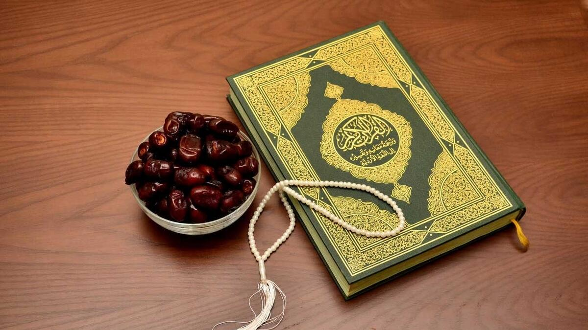
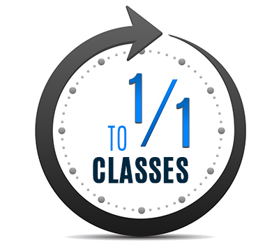
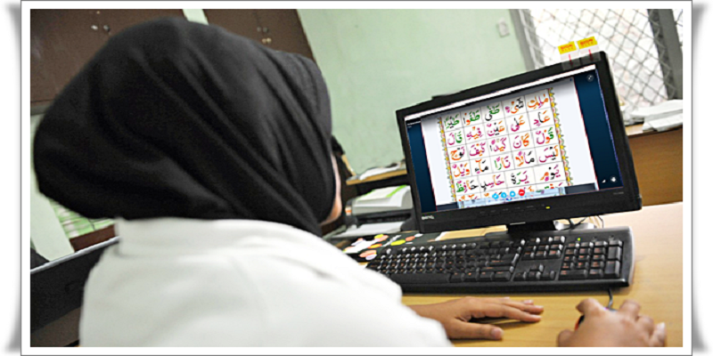

Quran Online Academy is an international Online Quran Academy, that has been providing online Quran Teaching services since 2011, assists you as well as your kids in Quran Learning with Tajweed and Quran Memorization. We have both male and female Quran tutors and there is no need for web cams so females and kids can Read Quran safely from the comfort of their homes. __________ __________ __________
ACHIEVE YOUR GOAL WITH BEST QURAN MEMORIZATION PROGRAM!
Our is engaging and challenging. It invites Hifz students to participate, motivates them to contribute, and captures their interest and attention. Along with Online Quran Memorization, our program capitalizes on the joy of learning the Quran and challenges students to enhance their reading and communication skills, abilities, and Islamic knowledge. You get a complete Quran memorizing package on a low budget and unlimited benefits!
WHAT ARE THE BENEFITS OF LEARNING QURAN CLASS ONLINE
Every Muslim man and woman must educate themselves. The Quran’s recitation is an important part of Islam. You may find yourself in areas or non-Arabic states where Holy Quran teachers are unavailable. Tutors may be accessible for any specific time when you are unavailable in some cases. When you’re in a scenario like you’re looking for a place to learn Quran online, you’ll find a lot of benefits. The primary advantage is that you can attend your Quran class whenever you choose.

GUIDE ABOUT LEARNING QURAN WITH TAJWEED
The tajweed is what makes Quran reciting so beautiful. Tajweed itself means success or ‘doing something successfully’ implying that there are rules to follow. When it comes to Quran recitation, following the tajweed guidelines means reading the Quran with such accuracy that each letter is given its own set of qualities. Tajweed is a word that those who have learned to recite the Quran are familiar with. The word’s literal meaning is ‘to perfect, adorn, or improve.’ On the other hand, Tajweed is a set of rules that reciters must follow to guarantee that each letter can pronounce correctly.
QURAN FOR KIDS
Every Muslim parent strives to give knowledge of the Quran to their children. The most basic skill your child needs to master is Tajweed (proper pronunciation of the Quran). We have hundreds of Quran tutors who are experienced with teaching Quran to kids. Some of the benefits of teaching Quran to your child through Qutor are: Gentle and compassionate Quran teachers who understand how to teach Quran to children; An easy to use software that can be controlled by the tutor so young children can learn Quran easily; Safety
WE ASSURE YOU!
24/7 FLEXIBLE SCHEDULE
Quran Online Academy offers one of the most effective online Quran teaching websites, through its interactive digital environment. You & your family can Read and Memorize Quran from the comfort of your home. QuranTutors are available 24 hours a day, seven days a week.

ONE-TO-ONE CLASSES
Online Quran classes system at Quran Online Academy comprises of a single Quran teacher giving Quran lessons to a single student thus ensuring devoted attention for better Quran learning. In One-to-One Quran classes system every family member get his proper time for study with Quran teacher.
FREE TRIAL CLASSES
At Quran Online Academy, we have experience of many years of Quran teaching online with devotion; and intention of seeking the cause of Allah. We are offering free trial Quran classes online anytime. Register for online Skype Quran Classes.
Our Affordable Courses
Norani Qaida With Arbaic Accent
This is the first step to learn Quran. Our tutors will start with you from the basics like learning the Arabic alphabet, reading simple words, then reading complete sentences, and eventually reading portions of Quran
Tajweed & Qirat Course
It is considered as innovative step for mastering Quran recitation. Through this advanced and customizable online course, you can learn Tajweed Quran online reception with professional mentor who master the Quran recitation with Tajweed.
Quran Reading & Hifz
“Quran Reading Course online”. Through this module, you or your kids can learn Quran recitation online reception in all over the world. You will learn proper pronunciation of verses of Quran, & the etiquette of Quran recitation also.
Arabic Language Course
There are some amazing resources out there so you can learn Arabic. There are so many Arabic courses on intenet. but our Speciality is teach with Sarf & nahw. This mathod is called to achive Fusha Arabic Language learning.
MSA & Fusha Course
We Introduce fusha course for those who are intrested for research in arabic Language. this will help you t learn arabic socity terms (old and new). We provide Special training on arabic talking. The review of the Arabic old library, you can learn yourself after it.
Apply To Get Ijazah
The final and last step in your journey of Quran learning is to urge certified for Quran recitation, memorization, or Tafsir. Through this “Quran Ijazah” course, our scholars will attest skills about your subject and take exam then grant you Ijazah.
Your journey At alkuttab
Step 1: Get Admission
This is the first step you will take yourself
Step 2: learn Qaida
This is designed as first step of Quran Learning

Step 3: learn Quran
This is second step you will learnd Quran
Step 4: Get Ijazah
Just apply after cource complete and get it.
Review
MEHWISH IQBAL
I was looking forward to a female teacher to learn Quran then one of my friend refers me Quran Online Academy & I'm really thankful to Quran Online Academy to teach me in a very professional way.
NADIA HAROON
I grew up in the USA & due to lack of attention I was unable to learn the Quran. In my maternal holidays I get opportunity to learn Quran & get admission in Quran Online Academy. Highly Recommended Quran Online Academy to my fellows.
AYESHA aLI
My two children get classes from there & I'm really appreciated their efforts towards my children.
Take Trial And Select Your Teacher Yourself
All teachers are qualified but this selection is for the diffrention of minds and moods. At Quran Online Academy, we have experience of many years of Quran teaching online with devotion; and intention of seeking the cause of Allah. We are offering free trial Quran classes online anytime. Register for online Skype Quran Classes.
Our Best Teachers
Wardah Khalid
Wardah Khalid is our Best Quran Teacher. She is teaching since7 years in Academy.
Jameel Ahmad
Mr. Jameel Ahmad is our Best Tajweed teacher. She is teaching since7 years in Academy.
Dr. Sarah Mushtaq
Dr. Sarah is our Best Arabic Language teacher. She is teaching since7 years in Academy.